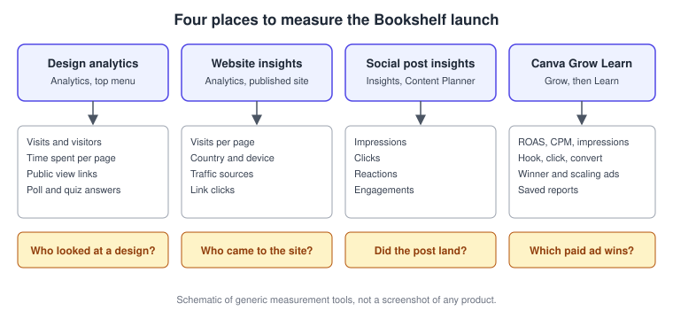
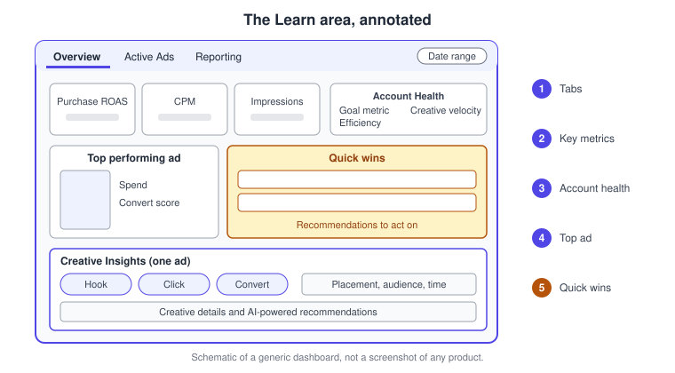
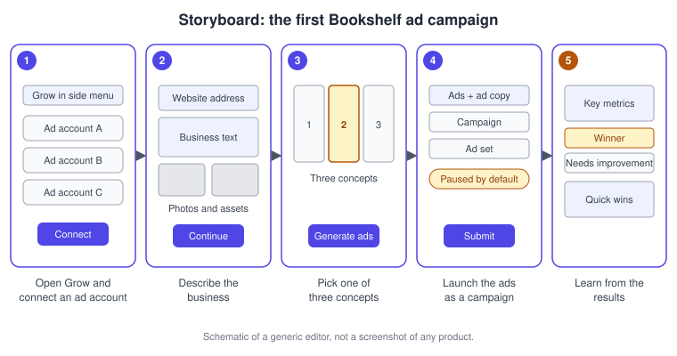

Canva Grow and Marketing Analytics
|
This content was generated with the assistance of AI and should be verified against the official documentation before being relied on in production. |
This page was checked against the official Canva Help Center and newsroom on 2026-11-07. It covers Canva Grow, the part of the Canva Visual Suite that creates, publishes and measures advertising, and the other measurement tools that live in the editor: design analytics, website insights and social post insights. Canva Grow was announced on 2025-10-30 as part of the Creative Operating System launch and is documented in the Help Center without a preview label. It is a plan-gated feature: the Help Center states that some plans do not include it (Education plans do not) and that an admin can switch each of its three parts on or off per role. The ad tagging inside Learn is limited to Canva Business and Canva Enterprise. Prices are not repeated here; see https://www.canva.com/pricing/ for the comparison of plans.
Canva Grow is a Premium AI feature, which means it draws on the allowance explained on Plans, Pricing and AI Allowance. Creating video avatar ads uses Ultra generation and may consume more allowance than image ads. The conversational Canva AI 2.0 launched as a research preview on 2026-04-16 and has no published general-availability date; nothing on this page requires it.
The running example is Bookshelf, the book catalogue and reading-list app designed in the Figma sub-section. Its launch campaign has a website, social posts and a small paid ad. The page shows how each of them is measured, then walks through the ad campaign step by step.
The measurement landscape
Canva has four separate places where results appear, and they answer different questions. Knowing which one to open saves time, because none of them merges into a single report.

| Tool | Where it lives | What it measures | Plans, as the Help Center words them |
|---|---|---|---|
Design analytics |
Analytics in the top menu of a shared or embedded design |
Visits, unique visitors, time spent, page performance, public view link traffic |
Pro, Teams, Education and Nonprofits |
Website insights |
Analytics on a published website design |
Visits per page, country and device, traffic sources, link clicks |
Pro, Teams and Education, with edit access |
Social post insights |
Analytics of a design shared to social media, and the Content Planner |
Impressions, clicks, reactions, engagements |
As design analytics |
Canva Grow Learn |
Grow, then Learn on the homepage |
Ad performance on connected Meta, TikTok and LinkedIn accounts |
Plans that include Canva Grow; ad tagging on Business and Enterprise |
Some of those articles predate the Business plan name, so check your own account when an Analytics entry is missing.
Canva Grow: Create, Launch and Learn
Canva Grow is reached from the side navigation of the Canva homepage: select Grow, or More first if it is hidden. It has three parts that form a loop, shown below. The Help Center describes it as a way to create ads, launch them and see how they perform in one place, on desktop and in the mobile apps.
Create
Create generates image ads and AI video avatar ads. You give it context in any combination of a website address, a description of the business, product photos and your own assets, choose between Premium and Ultra generation, review the business and product information that Canva prepares, and then pick one of three ad concepts before the ads are generated. Afterwards you can edit the ads in the editor with Magic Layers (see AI Photo Tools), create variations, or send them to Launch.
When an eligible Meta ad account with enough activity is connected, Create can also recommend suggested ads based on how the account has performed. The Help Center states that suggested ads are currently available for Meta accounts only.
Launch
Launch publishes ads to Meta, TikTok and LinkedIn without leaving Canva. An advertising account must already exist and be connected; creating a new advertising account is not supported in Canva. You select the creative, edit the ad copy (ad name, primary text, headline, description, call to action and website address; Generate writes a first draft), and choose where the ads go.
| Platform | Campaign types listed in the Help Center |
|---|---|
Meta |
Awareness, Traffic, Sales |
TikTok |
Reach, Sales (Website), Traffic |
Brand Awareness, Job Applicants, Video Views, Website Visits, Engagement |
A single submission can carry up to 50 ads. You may add them to an existing campaign, a new campaign or a duplicate of a previous one, and likewise choose an existing, new or duplicated ad set. By default the ads are submitted paused: they exist on the advertising platform but do not run until you activate them there. The Launch dashboard then shows each ad as in review, accepted, rejected or paused, depending on the platform. You are responsible for making the ads comply with the law and the platform’s policies, and every ad remains subject to the platform’s own review.
Learn
Learn, formerly called Ad insights, reads performance back from the connected accounts.
-
Overview gives key metrics such as Purchase ROAS, CPM and Impressions, an Account Health panel (goal metric, efficiency and creative velocity), the top performing ad with its spend and Convert Score, Quick Win recommendations and custom date ranges.
-
Creative Insights opens for a single ad and shows Hook, Click and Convert Scores, engagement by placement, audience or time, creative details such as format and landing page, and AI-powered recommendations. Ads are tagged with creative attributes by AI so that you can filter and compare winners and losers; that tagging is available only on Canva Business and Canva Enterprise.
-
Reporting lets you start from the default report or save custom reports with your own metrics, filters and date ranges.
-
Active Ads sorts live ads into Scaling, Winner and Needs Improvement. The thresholds, including minimum spend, are customised in the ad account settings. Group variants by ad name, by creative or not at all, and select Sync if the data looks stale.

-
The tabs switch between Overview, Active Ads and Reporting.
-
Key metrics follow the selected date range.
-
Account Health summarises the goal metric, efficiency and creative velocity.
-
The top performing ad shows its spend and Convert Score.
-
Quick Win recommendations are the suggested next actions.
Access restrictions
If Grow is missing, the Help Center lists two causes. Your subscription may not include Canva Grow, which no admin can change, and Education plans are the named example. Or the subscription includes it but the admin has not enabled it for your role. Admins choose the parts for each role, Create, Launch and Learn separately, so a colleague may use Learn to read results without being able to publish. Admins manage this together with the other AI features (see Administration, Enterprise and Security).
Design analytics and public view links
Outside advertising, the simplest measurement is the Analytics entry in the top menu of a design. It appears once a design has been shared or embedded, and a visit counts only while someone is actively viewing, so a hidden or minimised tab does not count and reopening it starts a new visit.
-
Activity covers people who have view, edit or comment access: total unique visitors, total visits, daily unique visits, where visitors are located, their device and operating system, and revisits. Names show only for Canva team members.
-
Time Spent gives the average time on the design and per page; Page Performance lists the top performing pages, the average number of pages visited and the share of visitors that reached each page.
-
External traffic covers public view links, social media and websites. For links it lists the number of links, unique visitors, each link’s name, visitors and last visit; selecting a link shows when people visited, how long they stayed on each page and where they stopped.
-
For designs shared to social media, impressions, clicks, reactions and engagements appear. For websites the article points to website insights instead.
Create a separate public view link for each channel, for example one for the newsletter and one for the book club message, name each of them, and compare their visitor numbers later. This is the nearest thing to an A/B comparison in the editor: the Help Center articles describe no built-in experiment tool, so a comparison is two variants with their own links, ads or posts, measured side by side. Poll and quiz responses from interactive elements also count under Activity (see Interactive Elements).
Website insights, the Google Analytics connection and the cookie banner are described step by step on Websites; social post insights are described on Social Media and the Content Planner.
Procedure: run and measure the first Bookshelf ad
The goal is a small paused ad campaign that sends readers to the launch website, then a first read of the results.
-
From the Canva homepage select Grow, then connect the Meta ad account that Bookshelf uses. Pick the Facebook Page and Instagram account when Launch asks for them.
-
Select Create ads. Enter the Bookshelf website address, a one-sentence business description and two product photos, and choose Image ads.
-
Review the business and product information Canva generated, then select Continue.
-
Review the three ad concepts, choose the one that matches the Bookshelf voice (see Brand Kit and Brand Voice) and select Generate ads.
-
Open a generated ad in the editor to adjust the headline with Magic Layers, then return to Grow.
-
Open Launch, select the ads, review the ad copy and select Generate if you want a draft to edit. Choose New campaign with the Traffic type, a new ad set, and leave the ads paused.
-
Review the platform, ad account, campaign, ad set and batch size, then select Submit and Go to Launch to watch the status change from in review to accepted.
-
Activate the campaign on the advertising platform when you are ready. After a few days open Learn, set a date range, read the Overview and open Creative Insights on the leading ad.
-
Compare it with the design analytics of the launch presentation and the website insights of the launch page, as in the table above, and save a custom report for the weekly review.

Desktop, mobile and shortcuts
The Help Center gives the same steps for desktop and mobile, with Grow under More when it is not visible in the side navigation. There are no keyboard shortcuts specific to Grow or to analytics, so none are listed for macOS or Windows.
Common mistakes
-
Expecting ads to run right after Submit. Launch submits them paused, and the platform still reviews them.
-
Reading Learn before the account is synced. Use Sync when the numbers look old.
-
Comparing a visit count with a unique visitor count. Design analytics reports both, and websites that use no cookies cannot count unique visits exactly.
-
Treating Canva’s quick wins as compliance advice. The advertiser stays responsible for the ad content.
-
Looking for ad tagging on a plan other than Business or Enterprise.
Where older guides are outdated
| Older guides say | Today | Date |
|---|---|---|
The graph-shaped Insights button at the top of the editor opens an Insights window for social and design views |
The menu entry is labelled Analytics and has Activity and External traffic sections; plan wording in the Help Center now lists Pro, Teams, Education and Nonprofits |
Checked 2026-11-07 |
Marketing in Canva stops at designing and scheduling |
Canva Grow creates, publishes and reads back paid ads for Meta, TikTok and LinkedIn |
2025-10-30 |
The Help Center calls ad reporting Ad insights |
The same area is now named Learn |
Checked 2026-11-07 |